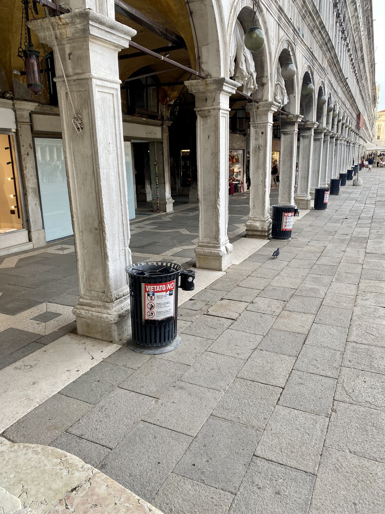
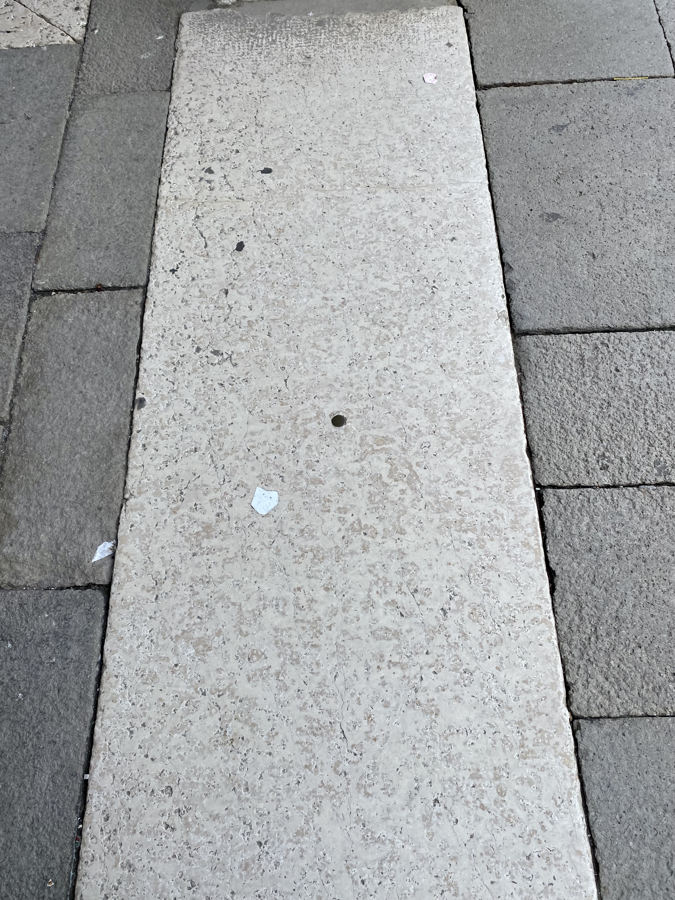
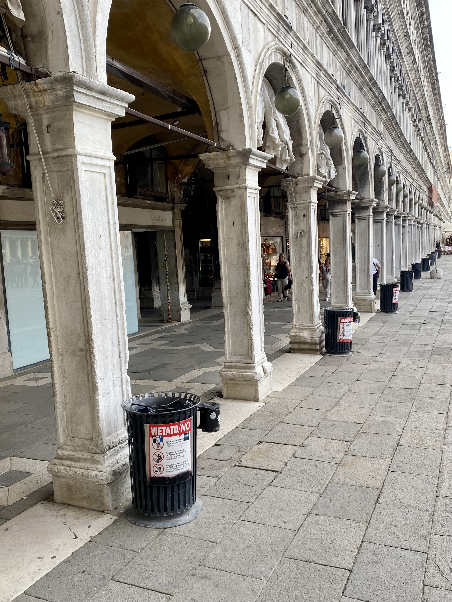

Una foto di Piazza San Marco con la sua splendida cattedrale è ciò di cui ogni turista ha bisogno per il proprio album. Tuttavia, quando i visitatori scattano le loro foto, raramente si rendono conto che la chiesa non è in simmetria assiale con gli altri edifici.
A picture of St. Mark's Square with its beautiful cathedral is what every tourist needs for their album. However, when visitors take their pictures, they seldom realize that the church is not in axial symmetry with the other buildings.

Se vi spostate nell'angolo della piazza vicino al Bacino Orseolo, noterete un bottone di bronzo incastonato nel pavimento di marmo accanto alla quinta arcata delle Procuratie.
If you move to the corner of the square near Bacino Orseolo, you will notice a bronze button embedded in the marble pavement next to the fifth arch of the Procuratie.

Se vi posizionate sopra di esso e guardate in alto, sarete perfettamente allineati con la chiesa, ottenendo finalmente la prospettiva perfetta per il vostro scatto.
If you stand on it and look up, you will be perfectly aligned with the church, finally achieving the perfect perspective for your shot.
